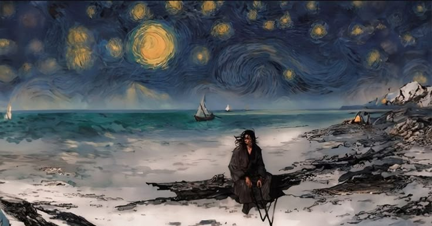

Vincent Willem van Gogh
Vincent van Gogh foi um dos artistas mais importantes da história da arte e uma das principais figuras do pós-impressionismo. Nasceu em 1853, nos Países Baixos, e morreu em 1890, aos 37 anos. Van Gogh começou a se dedicar à pintura de forma mais intensa por volta dos 27 anos. Durante sua carreira, produziu mais de 2 mil obras, incluindo pinturas, desenhos e esboços. Seu estilo ficou conhecido pelas pinceladas fortes e visíveis, cores intensas e formas expressivas, características que ajudavam a transmitir movimento e emoção.
-nuu.jpg)
Releitura A Noite Estrelada
A Noite Estrelada é uma das obras mais famosas de Vincent van Gogh, pintada em 1889, durante o período em que o artista estava internado no asilo de Saint-Rémy-de-Provence, na França. Na pintura, Van Gogh representa uma paisagem noturna, com um céu cheio de estrelas, uma lua brilhante e grandes movimentos circulares. As pinceladas marcadas e curvas dão ao céu uma sensação de movimento.
